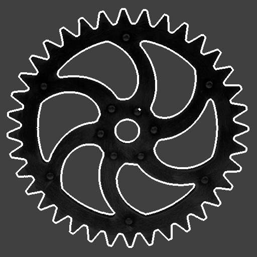
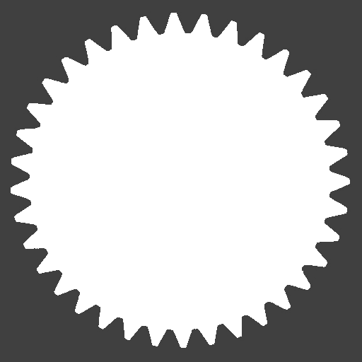

Morphological Operations
Morphological operations transform a region using a second region called a structuring element (SE). The SE acts as a probe that is slid across every pixel; its shape and size set the spatial scale at which features are grown, shrunk, or detected.
Structuring elements must be centred on the origin. Two common choices:
| SE | Construction | Character |
|---|---|---|
| Disk | region_from_circle(0, 0, r) | Isotropic — treats all directions equally |
| Square | region_from_box(-r, r, r, -r) | Axis-aligned — sharper corners, faster |
Mathematical foundation
All operations on this page are built from two primitives — the Minkowski sum and the Minkowski difference of two sets $A$ and $B$:
\[A \oplus B = \{ a + b \mid a \in A,\, b \in B \},\qquad A \ominus B = \{ c \mid B + c \subseteq A \}.\]
dilation(A, B) is A ⊕ B and erosion(A, B) is A ⊖ B; opening, closing, gradients, and boundaries are all defined as compositions of these two. The internal helpers Regions._minkowski_addition and Regions._minkowski_subtraction implement the primitives on Regions. Because the formulas treat A and B symmetrically, the structuring element can be any region — disks, boxes, polygons, line segments, even point clouds.
Erosion
erosion(a, se) shrinks a. A pixel is kept only when the SE, placed at that pixel, fits entirely inside a. Protrusions narrower than the SE are trimmed away.
julia> region5 = region_from_box(-3, 3, 3, -3); # 7×7 = 49 pixels
julia> se_sq = region_from_box(-1, 1, 1, -1); # 3×3 square SE
julia> e = erosion(region5, se_sq);
julia> area(e) # shrinks to 5×5
25
julia> contains(e, -2, 0) # 1 pixel inside the original boundary
true
julia> contains(e, -3, 0) # original boundary pixel — removed
falseA disk SE erodes isotropically. erosion(region_from_circle(0,0,r), region_from_circle(0,0,s)) gives region_from_circle(0,0,r-s) when r > s.
Dilation
dilation(a, se) grows a. A pixel is added for every pixel of the SE placed at every pixel of a — equivalently, every point reachable by sliding the SE over the region.
julia> small = region_from_box(-1, 1, 1, -1); # 3×3
julia> d = dilation(small, se_sq); # 3×3 dilated by 3×3
julia> area(d) # grows to 5×5
25
julia> contains(d, 2, 0) # pixel added beyond original boundary
trueDilation is the dual of erosion: dilation(a, se) == invert(erosion(invert(a), se)).
For convex SEs centred on the origin, two successive erosions with a 3×3 box give the same result as one erosion with a 5×5 box, because erosion satisfies $(A \ominus B) \ominus B = A \ominus (B \oplus B)$. The same identity holds for dilation. This lets you build a large effective SE from cheap repeated applications of a small one — handy when you want a tunable amount of erosion without re-creating SEs. The identity does not hold for non-convex or off-centre SEs in general.
Opening
opening(a, se) = erosion followed by dilation with the same SE. It removes foreground features (isolated pixels, thin protrusions) smaller than the SE while leaving larger structures nearly unchanged. The result is always a subset of a.
julia> opening(region5, se_sq) == region5 # box survives — no features smaller than SE
true
julia> isempty(opening(Region([Run(0, 0:0)]), se_sq)) # isolated pixel is removed
trueOpening is idempotent: applying it twice gives the same result as applying it once.
Closing
closing(a, se) = dilation followed by erosion. It fills background features (narrow gaps, small holes) smaller than the SE while leaving the overall shape nearly unchanged. The result always contains a as a subset.
julia> gapped = union(region_from_box(-3, 3, -1, -3), # two bars with a 1-column gap
region_from_box( 1, 3, 3, -3));
julia> area(gapped) # 6 columns × 7 rows, gap missing
42
julia> c3 = closing(gapped, se_sq);
julia> contains(c3, 0, 0) # gap at column 0 is filled
true
julia> area(c3) # gap plus rounded corners added
49Morphological Gradient
morphological_gradient(a, se) = difference(dilation(a,se), erosion(a,se)). The result is a ring that straddles the boundary of a, extending one SE radius both inside and outside.
julia> grad = morphological_gradient(region5, se_sq);
julia> area(grad) # 9×9 minus 5×5
56
julia> contains(grad, -3, 0) # boundary pixel — in the ring
true
julia> contains(grad, 0, 0) # interior pixel — not in the ring
falseInner and Outer Boundary
inner_boundary and outer_boundary use a fixed 3×3 square SE and split the gradient into the layer that lies inside versus outside the region.
julia> ib = inner_boundary(region5);
julia> area(ib) # one pixel ring inside
24
julia> contains(ib, -3, 0) # outermost layer of region5
true
julia> contains(ib, -2, 0) # second layer — not inner boundary
false
julia> ob = outer_boundary(region5);
julia> area(ob) # one pixel ring outside
32
julia> contains(ob, -4, 0) # first pixel beyond boundary
true
julia> contains(ob, -3, 0) # the boundary itself — not outer boundary
falseHoles and fill_holes
holes(a) returns all enclosed background regions — connected components of the background inside the bounding box that do not touch any edge. fill_holes(a) fills them all.
julia> box_frame = difference(region_from_box(-3, 3, 3, -3),
region_from_box(-1, 1, 1, -1)); # 7×7 box with 3×3 hole
julia> hs = holes(box_frame);
julia> length(hs) # one enclosed hole
1
julia> contains(hs[1], 0, 0) # the hole contains the origin
true
julia> filled_box = fill_holes(box_frame);
julia> area(filled_box) # hole filled — back to 7×7
49
julia> contains(filled_box, 0, 0) && contains(filled_box, -3, 0)
trueGear Example
Applying morphological operations to the segmented gear illustrates each operation's effect at the scale of the gear teeth (radius-5 disk SE for erosion/dilation, radius-8 for opening/closing):
se5 = region_from_circle(0, 0, 5) # disk SE, radius 5
se8 = region_from_circle(0, 0, 8) # disk SE, radius 8
se2 = region_from_circle(0, 0, 2) # disk SE, radius 2
eroded = erosion(gear, se5) # teeth shaved inward by 5 px
dilated = dilation(gear, se5) # teeth grown outward by 5 px
opened = opening(gear, se8) # small protrusions removed
closed = closing(gear, se8) # narrow inter-tooth gaps bridged
grad = morphological_gradient(gear, se2) # boundary ring
filled = fill_holes(gear) # spoke voids and shaft hole filled| Original | Eroded (r = 5) | Dilated (r = 5) |
|---|---|---|
| Opened (r = 8) | Closed (r = 8) | Gradient (r = 2) |
|---|---|---|
 |
| Holes filled |
|---|
 |
The gradient image traces every edge in the gear — outer teeth profile, spoke edges, and the shaft hole — as a thin white ring on the darkened original. The filled image shows the gear outline with all interior voids removed: only the teeth profile remains.